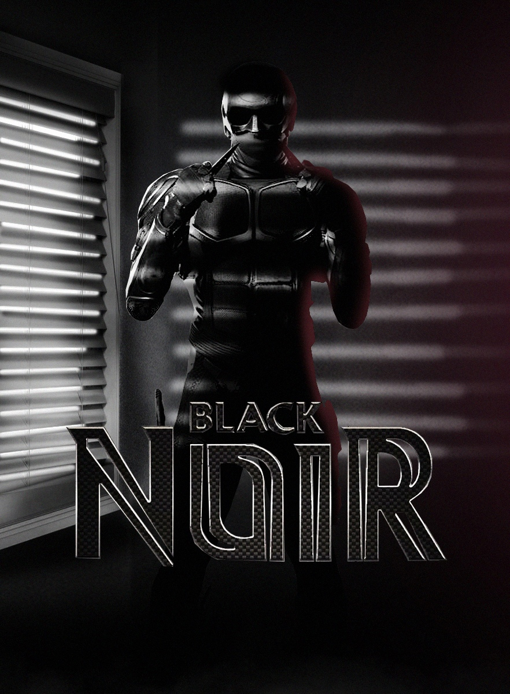

Call us on
Call us on  English
English Russian
Russian Kazakh
Kazakh Ukraine
Ukraine
Love polls? Do you want to see epic battles of various characters from various universes of pop culture? Then join our public INFINITY FIGHTS and vote for the strongest hero! Also in the discussions you can offer your options for battles. We welcome all newcomers and appreciate the old, but nevertheless we appreciate mutual respect and adequate behavior. Peace to all, meet in the heat of battle!
Black Noir
"..."
Biography:
Skills and powers.
- - Noir's power allows him to calmly hold adult men at arm's length above the ground, holding them by the throat;
- - He was able to nail Kimiko to the asphalt with a knife through the foot of a wild girl;
- - Easily tears a person apart.
- - sent a roundhouse kick moreover, flying several meters and demolished metal barrels for them, he was also able to throw a person out of the car with such force that he knocked out the trunk door of an SUV, kicked out the door of a moving car with a blow of two legs.
- - Throws Starlight like a rag doll with such force that the heroine pierces through concrete walls and a thick supporting concrete column.
- - According to Mother's Milk, Black Noir runs and moves faster than a moving car.
- - Attacked and slit the throats of the terrorist base guards faster than they could react.
- - pistol bullets simply ricochet off his body (possibly due to armor), but it is quite possible to shoot through his brushes, which, however, does not even slow him down;
- - Withstood point blank explosion that destroyed almost everything inside the floor of a small building.
- - Easily withstood the impact of Starlight's energy blasts, which drove Noir into the stone wall with such force that it cracked.
- - Master of penetration and surveillance. He managed to quietly sneak into the base of Arab terrorists and kill all the guards without making a fuss. Creep up close and silently kill with his knives, using the darkness and the surprise factor. Was able to secretly follow a group of Boys and hunt them down, although he very stupidly caught the eye of Butcher, reflected in the mirror (probably did this on purpose). If the mission requires a quick kill, cut the throat or pierce the body through the heart through and through. If desired, it can slowly beat the target, using everything in the environment: walls, columns, furniture and other interiors.
- - Black Kevlar suit;
- - Combat knives;
- - Throwing knives;
- -Stimulant with antihistamine;
- - Short ninja sword;